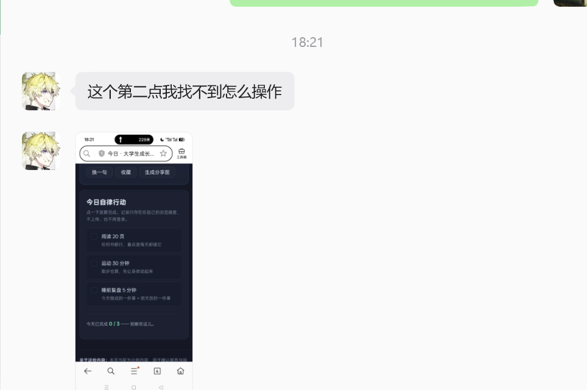
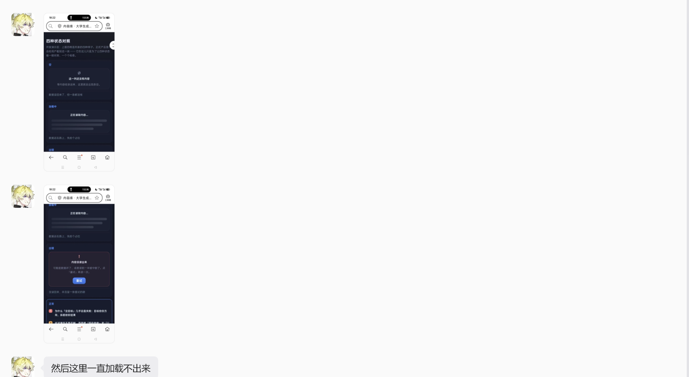

大学生成长网站 · 轻量可用性测试 · 目标：找出同伴卡在哪一步
| 网址 | https://source-board.app.workbuddy.host/ |
| 怎么发的 | 微信把网址 + 一段说明（Day14-发给朋友的话.txt）整段发过去 |
| 他在哪打开的 | 他自己的手机（所以「对方设备屏幕」名副其实） |
| 什么时候 | 2026-09-30 18:21 / 18:22（他边用边把截图发过来） |
| 他看的是哪一版 | 线上 Day 13 版 —— 证据：他的截图里还写着「阅读 20 页」，而且没有「+ 添加一项」 |
| 他的使用方式 | 自行使用；只走了五个任务里的两条（② 和 ④），其余未执行 |

他手机上的「今日」页：三项一个都没勾，底下写着「今天已完成 0 / 3」。 注意：三项前面的小方框其实都画出来了 —— 他没认出来那是可以点的。

他停在「内容库」那块「四种状态对照」开发演示区上（空 / 加载中 / 出错）。 他看到「加载中」那一格的灰条，以为真正的页面卡住了。
| 任务 | 执行情况 | 观察到的 / 他说的 | 被提示 | 做成 |
|---|---|---|---|---|
| 1 说清它是什么、给谁用 | 未执行 | 未记录 | 未记录 | 未记录 |
| 2 记住一件事（打卡） | 走了 | 卡住 ——「这个第二点我找不到怎么操作」 截图里 0 / 3，一项都没勾 |
无（远程，没给提示） | 否 |
| 3 收藏并找回来 | 未执行 | 未记录 | 未记录 | 未记录 |
| 4 找政策类内容 | 走了 | 以为坏了 ——「然后这里一直加载不出来」 他停在「四种状态对照」演示区上 |
无 | 否 |
| 5 关掉重开，还在吗 | 未执行 | 未记录 | 未记录 | 未记录 |
| 问题 | 他的回答 |
|---|---|
| 刚才有没有哪一步，你其实不知道下一步该点哪？ | 未问 —— 但答案已经写在原话一里了 |
| 如果只用一句话说这是个什么网站，你会怎么说？ | 未问 / 未记录 |
| 有哪个地方你觉得是坏的 / 不好用的？ | 原话二：「然后这里一直加载不出来」 |
| 你还会再来第二次吗？为什么？ | 未问 —— 这条最可惜 |
| 卡得最久的一步是哪一步？ | 任务 ②：他不知道怎么「记下今天做到的一件事」。 而三项前面的小方框就在他自己截的图里 —— 他还是没认出来。 |
| 最像「功能坏了」的是哪一处？ | 「内容库」那块「四种状态对照」演示区。他说「一直加载不出来」—— 那是只有知道真相的人（我）才知道它是演示区的，用户只知道它坏了。 |
| 如果只能修一条，我修哪条？为什么？ | 按第八节规则本应只修一条（卡点①：有人完全做不成 → 优先修）。 当时 Jimmy 明确选了「三条全做」，属他批准的扩范围。 ⚠️ 但按规则，真正最该优先修的是卡点②（有人觉得坏了 = 信任问题）—— 它今天没修，因为当时还没拿到这两张截图。 |
| 反馈 | 改之前 | 改之后 |
|---|---|---|
| 行动项写死 | 「今日」行动卡永远只有 3 项，改不了、加不了 | 默认 3 项不许删，另可自己加最多 10 项；点「+ 添加一项」就地展开一行输入框 |
| 阅读门槛高 | 「阅读 20 页」 | 「阅读 10 页」 |
| 记录点不开 | 「我的」里 7 个格子不可点，只看得到数字 | 点某天就地展开：日期 + 当天做了哪几项 + 完成 n / 共 m 项 |
| 怎么证明能用 | 命令行 62 / 62（不开浏览器跑纯函数）；真机 72 / 72 （CDP 驱动真 Edge：真鼠标点击、真刷新、真关掉浏览器重开） |
| 截图 | 桌面 Day14-改动验证截图/ 5 张，每张都亲眼看过。
其中 day14-03-gone-item-kept 证明
「删掉一项后那天的完成数仍然是 2」 |
| 还没修的 | 卡点②（内容库那块演示区让人以为页面坏了）—— 今天没修。 按第八节的规则，它属于「有人觉得坏了 = 信任问题」，本该优先于这次做的那些功能； 当时还没拿到他的截图。 |
docs/screenshots/day14/；
Day 14 · 大学生成长网站 · growth-site ｜ 完整过程见仓库 docs/day14-usability-test.md 第六节
空白模板见 docs/day14-test-record-sheet.html（供下次测试打印使用）